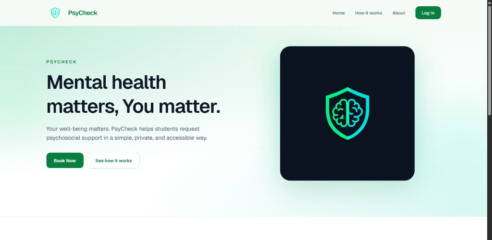
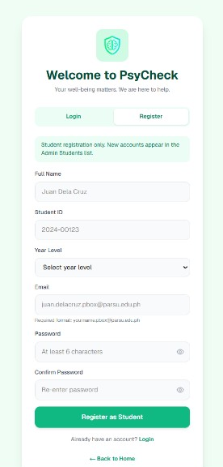
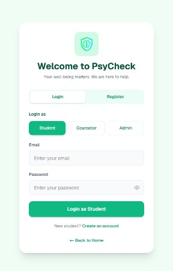
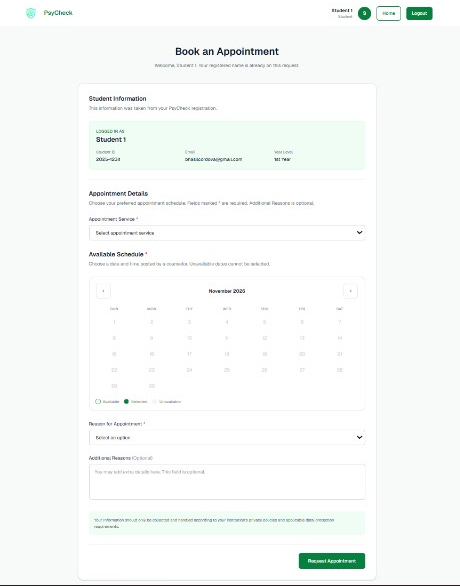
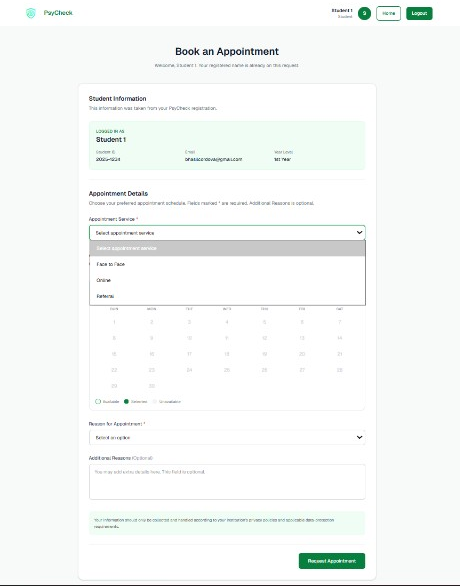
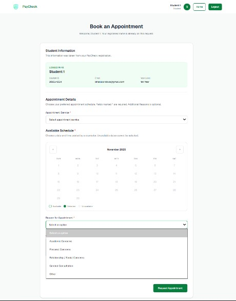

Register
Create a student account with your ParSU email.
Student user manual
Mental health matters, you matter.
How to register, log in, request a psychosocial support appointment, and wait for approval. The pictures in this guide are from the live site.
Start here
PsyCheck is the school site where students request psychosocial support. You create a student account, sign in, choose an open schedule, and wait while a counselor reviews the request.
Create a student account with your ParSU email.
Sign in as Student. You go straight to booking.
Pick a service, an open date and time, and a reason.
The request stays Pending until it is reviewed.

Creating an account does not need approval. You can sign in after you register.
The wait starts after you click Request Appointment. The request stays Pending until a counselor or administrator reviews it.
Step 1 · Register
Registration is for students only. Open the site, then choose Log In or Book Now.
On Welcome to PsyCheck, choose Register. You can also use Create an account under the login form.
Full name, student ID, and year level. Use the name you want counselors to see. You cannot edit it later on the booking form.
It must end with .pbox@parsu.edu.ph. Example: juan.delacruz.pbox@parsu.edu.ph
At least 6 characters. Type it again in Confirm Password. The eye icon shows or hides what you typed.
If you are signed in right away, PsyCheck opens Book an Appointment. Otherwise it returns to Login and tells you to sign in as Student.
Student accounts only. The green note on the form says new accounts appear in the Admin Students list. That is for the office. You do not wait for anyone before you can log in.

| Field | What to enter |
|---|---|
| Full Name | The name counselors should see. Example: Juan Dela Cruz. |
| Student ID | Your ID number. Example: 2024-00123. |
| Year Level | 1st Year, 2nd Year, 3rd Year, or 4th Year. |
| Must end in .pbox@parsu.edu.ph. Example: juan.delacruz.pbox@parsu.edu.ph. | |
| Password | At least 6 characters. The eye icon lets you check the spelling. |
| Confirm Password | Type that same password again. |
Step 1 · Register
Every field is required. If the email is not a ParSU student address, or the two passwords differ, the form stays put and the reason appears in red. When it succeeds, you will see one of the two results below.
Use your own account. Do not share your password. On a shared computer, log out when you finish. Logout is on the booking page, at the top right.
Step 2 · Log in
From the home page, choose Log In or Book Now. Both open Welcome to PsyCheck. Stay on the Login tab.
Under Login as, Student must be the green button. Counselor and Admin are for staff. A student account will not open those roles.
Use the ParSU email and password from registration. The eye icon shows the password if you need to check it.
The button says “Signing in...” while it checks the account. A successful login opens Book an Appointment.
You should land on booking. The top of that page shows your name, a Home button, and Logout. If you are sent back to login, the email or password did not match, or Student was not selected.
Wrong role. If you pick Counselor or Admin, PsyCheck signs you out and says the account is registered as student, not that role. Choose Student and try again.

Step 3 · Book
You must be signed in. If you open booking without an account, PsyCheck sends you to login first. Your name, student ID, email, and year level are copied from registration. You do not type them again.
The green Student Information box is labeled “Logged in as.” It shows the name, ID, email, and year level from your account. If the name is missing, log out and sign in again.
Home returns to the public page. You can come back to booking while you are still signed in. Logout ends the session. Use it on a shared computer.
Fields with a red asterisk are required: appointment service, an available date, an available time, and a reason. Additional Reasons is optional.
The names in the photo are from a sample login. Your own registration details appear in that green box.

Already taken from registration. Check that they are yours.
Face to Face, Online, or Referral.
A posted date, then one of the times under it.
Pick a reason, then Request Appointment.
Step 3 · Book
Open the list and choose one. Only dates posted for that service can be selected. Changing the service clears a date you already picked.
Face to Face is an in-person session. Online is a remote session. Referral is for requesting support for another student. Referral asks for that student’s name, student number, session (Face to Face or Online), ParSU email, and the cause of the referral.
Pick a date a counselor has opened. Gray dates cannot be clicked. Use the arrows beside the month to move forward or back.
After the date, time buttons appear. Each one shows the hours and the session type. A green line confirms the time you selected.
No dates yet? If the page says no counselor schedules are posted, check again later or try another service. You cannot type in your own date.

A green box opens under the service list. It is about the other student, not about you. All of these are required, and the email must be a ParSU student address.
| Name | The student you are referring. |
| Student Number | That student’s ID number. |
| Session | Face to Face or Online. This filters the dates you can pick. |
| Gmail | Their address, ending in .pbox@parsu.edu.ph. |
| Cause of Referring | Why you are asking the office to see them. |
Step 3 · Book
Choose the option that fits best. This field is required.
| Academic Concerns | Schoolwork, classes, or study stress. |
| Personal Concerns | Something you want to talk through privately. |
| Relationship / Social Concerns | Friends, family, or other relationships. |
| General Consultation | You want guidance and are not sure of the category. |
| Other | None of the choices above quite fits. |
This box is optional. Add only what you are comfortable sharing. Leave it blank if the reason list is enough.
The button changes to “Submitting...” while the request is saved. Do not close the page until the confirmation appears.
If a required choice is missing, PsyCheck lists it in red and scrolls to the first empty field. Fix those items, then send the request again.

Step 4 · Wait for approval
A saved request is not yet a confirmed appointment. The screen tells you to wait for the administrator to review it. The status on that message is Pending.
Thanks. Your appointment request has been saved. Please wait for the administrator to review your request.
A no-reply confirmation was sent to your ParSU email.
The confirmation that appears on the site after Request Appointment. Click Okay to close it.
Look in the inbox of the ParSU address you registered with. The message comes from PsyCheck and should not be replied to.
Subject: PsyCheck appointment request received
It repeats your service, date, time, and mode, and it says Status: Pending. A counselor will review the request. Also check Spam or Junk.
After approval
You will hear back on the same ParSU email. Read the newest PsyCheck message before you go to a session, because the schedule can change.
Subject: PsyCheck appointment approved
The message says your psychosocial support appointment request has been approved. It lists the service, date, time, and mode.
For an online session, the email may include a meeting link. Use that link at the approved time. For face to face, attend in person at the date and time in the email.
Subject: PsyCheck appointment rescheduled
A counselor saved a new schedule. The message shows the updated date and time, and the status is Rescheduled.
Follow the new details, not the time you first requested. An online session may include a new meeting link.
| What you see | What to do |
|---|---|
| Invalid email or password | Check the ParSU address and password. Use the eye icon. Stay on Login as Student. |
| Registered as student, not counselor | You chose a staff role. Select Student, then log in again. |
| No schedules are posted | A counselor has not opened that service yet. Try another service, or check back later. |
| Please fill out these required fields | Service, date, time, and reason are required. Referral also needs the other student’s details. |
| Email could not be sent | The appointment request is still saved as Pending. Tell the office if you need them to confirm they received it. |
If you need help sooner than an appointment. Do not wait on a Pending request when someone is in immediate danger. Contact campus security or local emergency services. The form also reminds you that your information is handled under your school’s privacy rules.